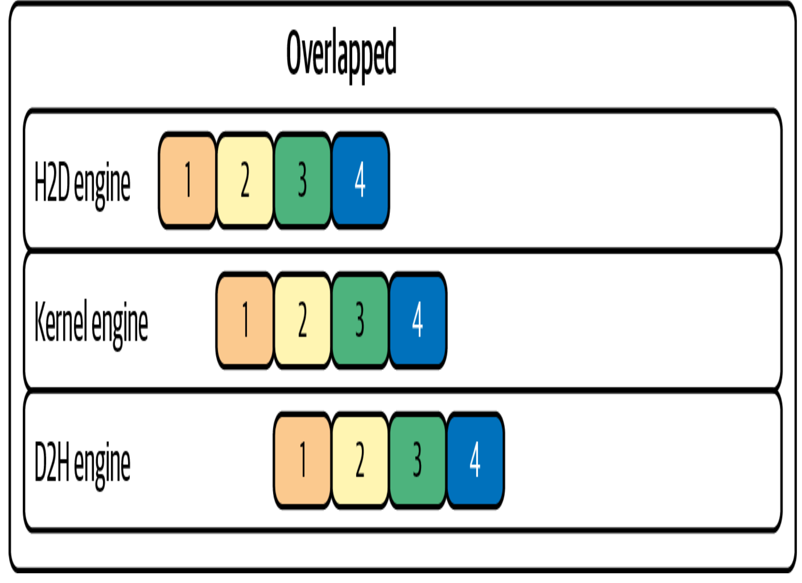
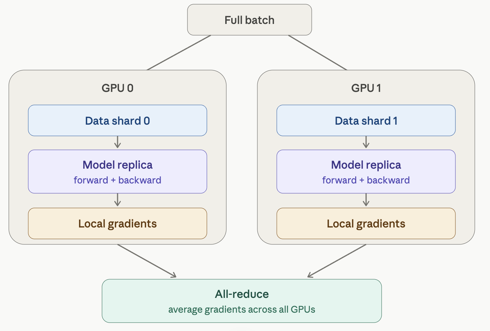

Distributed networking and tuning operations for LLMS
1 Introduction
This chapter consists of nvidia’s magnum IO (NIXL, GPUDirectRDMA, nccl), also some tips and tricks to keep GPU active by overlapping computation and communication, Disaggregated inference using NIXL. We will also deep dive into some of the more intricacies related to NVLINK, GDS and nvme. Performance engineers need to carefully tune the network and storage fabric to allow high level of GPU utilization
2 Overlapping computation and communication
Data transfers should occur concurrently with ongoing computations (pipelining) in order to use GPU efficiently. Pytorch allows asynchronous communication so that if one layer of neural network is finished with its computation the next batch is ready.

Cuda uses cuda streams where one stream can compute matrix multiplications and the other streams can work on communication and other primitives. Gradient accumulation helps in performing more computation thereby increasing the amount of computation performed between communication events. The less communication events the better since this helps in keeping GPU occupied and improves throughput.
Compression hjelps in reducing the amount of data to be sent during communication. Although this does not help in reducing the number of communication events, it helps in completing the events faster.
The naive way would be one all-reduce per parameter tensor, fired the moment that tensor’s gradient is ready. That’s terrible for throughput for two reasons. First, collectives have a fixed per-call latency/launch overhead, and they only approach peak interconnect bandwidth on large contiguous buffers — so thousands of tiny all-reduces leave you latency-bound and bandwidth-starved. Second, doing them naively tends to serialize: compute the whole backward, then communicate. Bucketing fixes both. DDP groups parameters into buckets (default bucket_cap_mb = 25 MB). As gradients are produced during backward, they’re copied into a bucket’s contiguous buffer; when a bucket is completely filled, DDP launches a single all-reduce for that whole bucket. Two wins come out of this:
Fewer, larger collectives → the fixed latency is amortized and the interconnect runs near peak bandwidth. Communication/computation overlap → because backward produces gradients for the last layers first, the earliest buckets fill while the rest of the backward is still running. DDP kicks off the all-reduce for a ready bucket concurrently with the ongoing backward compute. The communication hides behind computation instead of running after it.
3 Async execution with cuda streams
One stream can handle compute kernels such as matrix multiplies, while another stream handles communication such as data copies and all-reduce calls. By assigning work to different streams and using nonblocking operations, communication can happen in the background.
Pytorch hides this complexity. During DDP (distributed data parallel), it automatically installs hooks on backward pass such that each gradient bucket triggers a NCCL all reduce on a cuda stream. For proper syncronization avoid torch.Tensor.item() and torch.cuda.synchronize
4 Gradient Accumulation
Instead of updating model weights after every pass, the gradients are computed and summed across micro batches allowing for a massive batch size on a GPU with fewer communication events (nccl all_reduce or sum). Consider 4 minibatches within an epoch, the communication frequency would be cut by 4 during each training run (one epoch)
Bucketizing gradients helps in grouping many small gradients together, once the bucket becomes full the all_reduce synchronization can take place. However, bucket sizing is a trade-off. Very large buckets maximize bandwidth utilization but delay the start of communication since you wait for more gradients to accumulate before kicking off the all-reduce. Very small buckets start transfers earlier but incur more overhead due to many small NCCL calls. (Default bucket size in pytorch is 25MB)
5 Overlapping computation and communication
torch.multiprocessing -> can help with data pipeline task like preparing a process on the GPU, (Normally you do this with torchrun).
5.1 Distributed Data Parallel
Distributed Data Parallel (DDP) is the standard way PyTorch scales training across multiple GPUs. The mental model is simple once you see it: every GPU holds a full copy of the model, but each one only sees a slice of the data. They train independently, then synchronize their gradients so all the copies stay identical. Here’s the picture:

- Replicate. When you wrap your model in DistributedDataParallel, each process (one per GPU) gets its own complete copy of the model, initialized to identical weights. Nothing is partitioned — every GPU has the whole network.
- Shard the data. The global batch is divided so each GPU processes a different, non-overlapping slice. A DistributedSampler normally handles this so no two GPUs train on the same samples in an epoch. If each GPU runs a batch of 256, with 2 GPUs your effective batch size is 512.
- Forward + backward, independently. Each GPU runs forward and backward on its own shard with no communication. Because the data slices differ, the gradients each GPU computes are different at this point.
- All-reduce the gradients. This is the heart of DDP. The gradients from every GPU are summed and divided by the world size, so every GPU ends up holding the same averaged gradient. Averaging gradients is mathematically equivalent to having computed gradients over the full combined batch on one device.
- Identical optimizer step. Since every replica now has identical averaged gradients and started from identical weights, applying the optimizer step keeps all copies perfectly in sync — no weight broadcast needed after step 1.
6 Nvidia’s Magnum IO
Nvidia’s overarching IO acceleration platform to speed up data movement across CPU, GPU and network storage It consists of 4 components 1. Storage I/O: Nvidia’s GDS, GPU direct storage which allow GPU’s to directly access storage like NVMe without going through host CPU memory. 2. Network IO: This consists of RDMA, NCCL, etc to allow high speed data transfer across nodes bupassing CPU 3. Internal network compute: DPU, SHARP (inifniband switches within a node) 4. I/O management: Unified fabric manager to provide diagnostics, telemetry and other lifecycle management
6.1 RDMA
GPUDorect RDMA lets an NIC (infiniband) to perform direct memory access from GPU’s device memory across 2 servers bypassing host CPU RAM. It registers GPU buffers with NIC which allows one sided reads and writes for remote GPUs RoCE (RDMA over converged ethernet) allows GPUs to perform RDMA over the ethernet (although this is very slow)